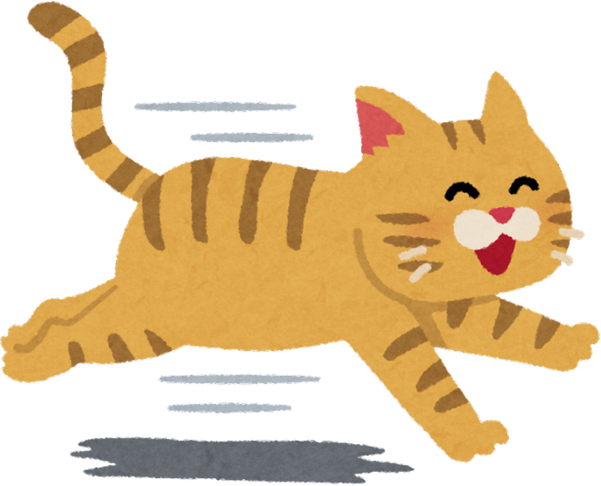
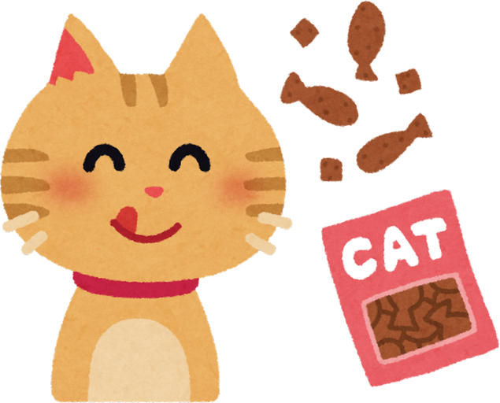
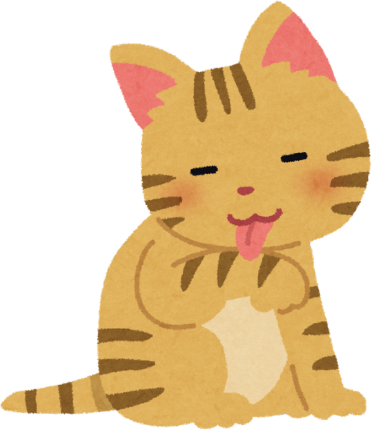
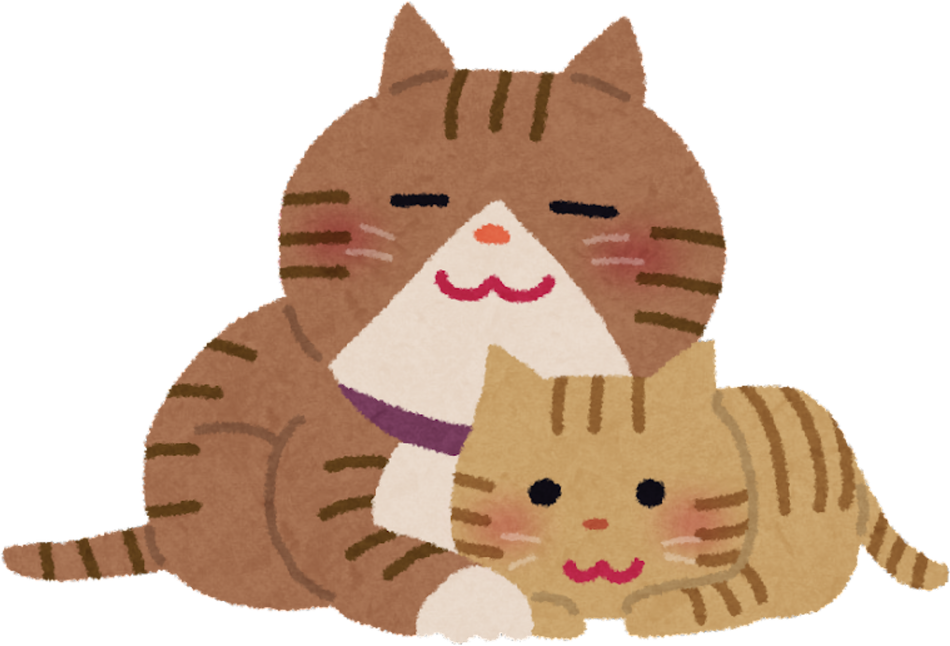
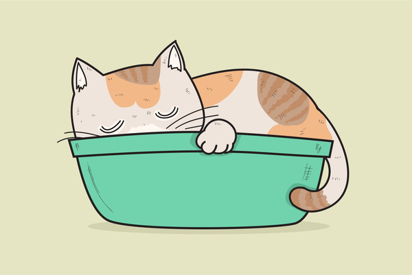

1

🧼 Higiene
Los gatos suelen asearse solos, pero necesitan algunos cuidados adicionales:
- Mantener limpio su arenero.
- Cepillar su pelaje regularmente.
- Revisar sus uñas y oídos.
- Limpiar su recipiente de comida y agua.
Todo lo que un buen dueño debe saber para mantener a su gato sano, feliz y lleno de energía.

Los gatos son mascotas independientes y cariñosas, pero su bienestar depende de los cuidados que reciben. Conoce los aspectos más importantes de su salud. 🐱
Aprende de forma visual cómo cuidar la salud de tu gato. ¡Dale play! 🐱

Los gatos suelen asearse solos, pero necesitan algunos cuidados adicionales:
Los gatos duermen entre 12 y 16 horas al día… ¡y algunos hasta 20 horas!

Una buena alimentación es fundamental para la salud de los gatos. Deben consumir alimentos ricos en proteínas, vitaminas y minerales. También necesitan agua fresca todos los días para mantenerse hidratados.
Las vacunas ayudan a prevenir enfermedades graves. Además, la desparasitación protege a los gatos de parásitos internos y externos que pueden afectar su salud.
Un gato puede saltar hasta 6 veces la longitud de su cuerpo en un solo salto.
El ejercicio ayuda a prevenir el sobrepeso y mantiene a los gatos activos. Jugar con pelotas, cuerdas o juguetes especiales mejora su salud física y mental.

Algunas enfermedades que pueden afectar a los gatos son:
Los gatos tienen aproximadamente 32 músculos en cada oreja, lo que les permite moverlas en distintas direcciones.

Los gatos también necesitan bienestar emocional. Un ambiente tranquilo y seguro, con la atención de sus dueños, ayuda a reducir el estrés y la ansiedad.

Es importante observar si el gato presenta:
Sus bigotes los ayudan a medir espacios y orientarse en lugares oscuros.
La salud de los gatos depende de una alimentación adecuada, ejercicio, vacunación y mucha atención. ¡Cuida a tu felino y vivirá feliz por muchos años!